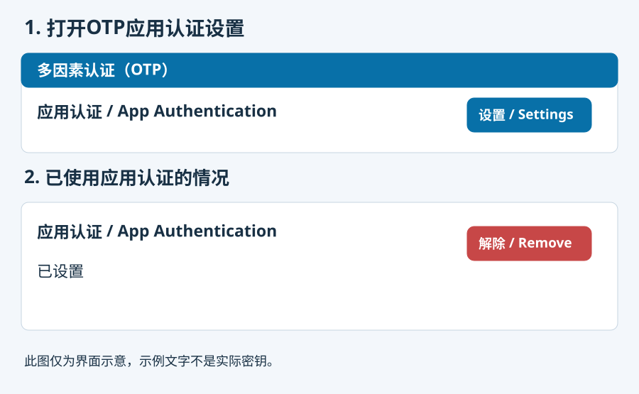
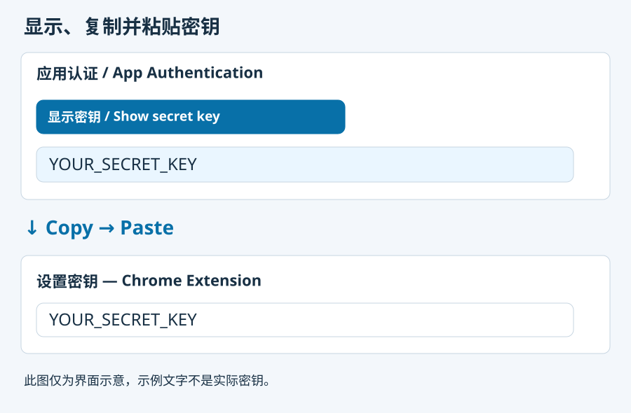
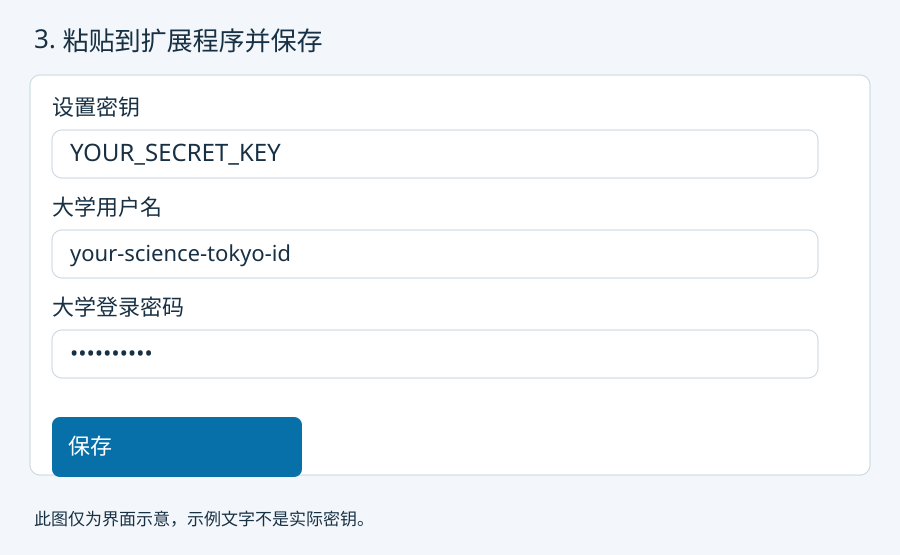

在大学认证门户打开“多因素认证（OTP）”，点击“应用认证 / App Authentication”的“设置”。

此图仅为界面示意，示例文字不是实际密钥。点击“显示密钥 / Show secret key”。复制显示的字符串，粘贴到扩展的“设置密钥”栏，无需扫描二维码。

此图仅为界面示意，示例文字不是实际密钥。输入大学用户名、大学密码，以及至少6个字符的加密口令和确认栏，点击“保存设置”。这些数据一起加密。向已有密钥添加登录信息时请先解锁，保持设置密钥栏为空，填写并确认当前或新的加密口令后保存。

此图仅为界面示意，示例文字不是实际密钥。如果大学首次注册尚未完成，请点击扩展的“显示当前验证码”，将六位代码输入大学的“令牌”栏并点击“设置”。以后解锁扩展，再打开或重新加载 https://isct.ex-tic.com/auth/session，即可依次自动填写和提交用户名、密码和OTP。
若已使用应用认证且无法再次显示密钥，必须在OTP设置 → App Authentication（应用认证）→ Remove（解除）中先删除旧注册，再重新设置以签发新密钥。将新显示的密钥粘贴到扩展，并再次完成大学首次注册。旧密钥将失效。若仍持有当前有效密钥，可直接使用，无需删除或重新签发。